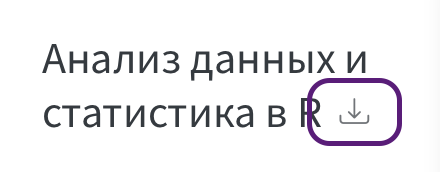
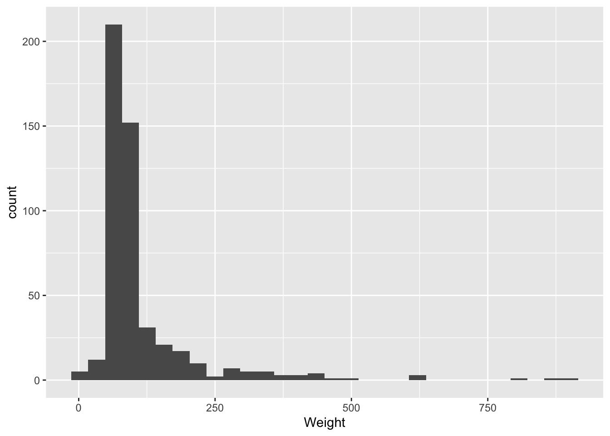

![]()
doc <- list(title = "Мой первый отчет",
author = "Имя Фамилия",
format = "html",
lang = "ru")16 Отчеты: Quarto
16.1 Зачем Quarto: воспроизводимый отчет
К этому моменту мы уже научились не только импортировать данные и с ними ковыряться, но и получать что-то полезное на выход — описательные статистики и графики, которые можно вставлять, например, в научные статьи. Однако любой, кто хотя бы минимально сталкивался с научной работой, знает, что анализ данных редко бывает простым линейным процессом: результаты постоянно приходится пересчитывать, любое небольшое изменение в анализе приводит к новым цифрам — и всё приходится переделывать заново. Скрипты сильно упрощают дело: если пользователям Excel, SPSS, Statistica и подобных программ приходится каждый раз прожимать все кнопочки заново, то при наличии скрипта обычно нужны минимальные изменения, а иногда — вообще никаких: достаточно подставить файл с новыми данными. И тем не менее все результаты и графики приходится каждый раз копировать в документ руками. А что, если бы мы могли собрать весь документ одной кнопкой, где был бы и текст, и код, и результат его выполнения? Именно для этого и нужен Quarto. Основная идея Quarto — это объединение текста, исполняемого кода и его результатов в едином файле, который затем можно превращать в отчеты самых разных форматов: PDF, документы Word, HTML-страницы, презентации (PowerPoint или reveal.js) и даже веб-сайты. Эта книга — тому пример: она целиком написана в Quarto. Если вы читаете ее как веб-сайт на компьютере, обратите внимание на название в панели слева (на телефоне эта панель открывается кнопкой меню): рядом с ним — кнопка скачивания в форматах PDF и EPUB.

Исходные файлы книги — обычные .qmd-документы, их можно посмотреть в репозитории на GitHub (https://github.com/Pozdniakov/tidy_stats). Когда я что-то меняю, то просто пересобираю книгу сразу во всех форматах — и с минимальными усилиями проверяю, что всё собирается красиво и без ошибок. Кроме того, в Quarto написаны многие современные материалы по R, а некоторые исследователи пишут в нем и научные статьи целиком!
16.2 Первый документ
Quarto — отдельная программа: она работает и без RStudio, и даже без R — вместо него можно использовать Python (через Jupyter), Julia или Observable JavaScript. Тем не менее Quarto сделан той же компанией Posit, что и RStudio, и очень удобно встроен в эту среду, в чем мы сейчас убедимся.
Для начала давайте создадим новый Quarto-документ. Это не сильно отличается от создания нового R-скрипта: для этого выберите в меню File - New File - Quarto Document... или нажмите на белый квадрат сверху с зеленым кругом и белым плюсиком — там тот же пункт Quarto Document.... После этого откроется окно с множеством опций, которые можно смело игнорировать: всё это потом можно будет поменять. Напишите какое-нибудь название и свои имя и фамилию — просто чтобы понять, где они потом в документе появятся. После того как нажмете Create, откроется базовый шаблон Quarto-документа — на английском, как есть:
---
title: "Мой первый отчет"
author: "Имя Фамилия"
format: html
---
## Quarto
Quarto enables you to weave together content and executable code into a finished document. To learn more about Quarto see <https://quarto.org>.
## Running Code
When you click the **Render** button a document will be generated that includes both content and the output of embedded code. You can embed code like this:
```{r}
1 + 1
```
You can add options to executable code like this
```{r}
#| echo: false
2 * 2
```
The `echo: false` option disables the printing of code (only output is displayed).Этот шаблон можно сразу отрендерить — сделать рендер (render), то есть собрать из него готовый документ: нажмите кнопочку Render сверху или Ctrl + Shift + K (Cmd + Shift + K на macOS). Через некоторое время в правом нижнем окне, на вкладке Viewer, откроется симпатичная HTML-страничка. При желании ее можно открыть в интернет-браузере, опубликовать в интернете или отрендерить во множестве других форматов — этому мы и будем учиться дальше!
16.3 Из чего сделан Quarto
Теперь давайте посмотрим на то, как устроен .qmd-документ. Он состоит из трех частей: 1) Markdown-разметки, которая описывает, как оформлен текст; 2) YAML-шапки (YAML header), в которой хранятся настройки документа и чанков; 3) чанков (chunks) с кодом, который выполняется при рендере. Quarto собирает всё это вместе и делает красивый документ.
16.3.1 Языки разметки
Язык разметки (markup language) — это компьютерный язык, но не язык программирования. Понятие разметки пришло из издательского дела. Редактор получал рукопись и размечал ее для наборщика: вот здесь нужно выделить курсивом, вот здесь сделать текст жирнее, а вот здесь подчеркнуть. Сам текст — это одно, а указания, как его оформлять, — другое.
Язык разметки устроен так же, но для компьютера: чтобы программа могла распознать пометки и превратить текст в оформленный документ. Размечать можно по-разному: можно описывать внешний вид (вот этот текст курсивом, 16 пунктов), а можно — смысл: вот это заголовок первого уровня, вот это — второго. Такую разметку называют описательной (descriptive markup). Оказалось, что второй подход хоть и требует некоторой абстракции, зато гораздо гибче: достаточно просто разметить все заголовки — и при смене шаблона их оформление меняется разом, а не по одному.
В программе Word вы видите сразу результат применения разметки. Такой подход называется What You See Is What You Get (WYSIWYG, «что видишь, то и получишь»; да, эта аббревиатура действительно используется!). У документов Word есть свой язык разметки со всеми стандартными элементами, просто этот язык надежно спрятан от конечного пользователя. Другой вариант — явное использование языка разметки. В этом случае вы видите структуру текста вместе с разметкой, а результат получаете после преобразования. Такой подход называется What You See Is What You Mean (WYSIWYM, «что видишь, то и имеешь в виду»). Сторонники этого подхода считают, что он позволяет сосредоточиться на содержании: не нужно одновременно думать и о том, что написать, и о том, как это будет выглядеть.
Один и тот же абзац в трех языках разметки — Markdown, HTML и LaTeX:
## Результаты
Средний вес героев --- **112 кг**, см. *таблицу 1*.<h2>Результаты</h2>
<p>Средний вес героев — <b>112 кг</b>, см. <i>таблицу 1</i>.</p>\section{Результаты}
Средний вес героев --- \textbf{112 кг}, см. \textit{таблицу 1}.У HTML и LaTeX исходник тяжело читать. Markdown задуман так, чтобы исходник читался как обычный текст.
Базовый синтаксис Markdown умещается на одну страницу:
# Заголовок
## Подзаголовок
**полужирный**, *курсив*, `код`
- пункт
- еще пункт
1. нумерованный
2. список
> Цитата
[Ссылка](https://quarto.org)

| Пол | Героев |
|--------|--------|
| Female | 142 |
| Male | 339 |
Формула: $SE = SD / \sqrt{n}$
СоветИстория: от GML до Markdown
Идею описательной разметки в конце 1960-х развивали в IBM: в 1969 году Чарльз Голдфарб, Эдвард Мошер и Рэймонд Лори создали язык GML (по первым буквам их фамилий). Из него вырос стандарт SGML (1986), а на его основе Тим Бернерс-Ли в 1991 году создал HTML — тот самый великий и ужасный язык разметки, на котором до сих пор написаны все веб-страницы.
| Год | Что | Кто |
|---|---|---|
| 1969 | GML в IBM — первая описательная разметка | Голдфарб, Мошер, Лори |
| 1978 | TeX | Кнут |
| начало 1980-х | LaTeX — описательные команды поверх TeX | Лэмпорт |
| 1986 | SGML — стандарт ISO | |
| 1991 | HTML на основе SGML | Бернерс-Ли |
| 1998 | XML | W3C |
| 2004 | Markdown | Грубер, Шварц |
| 2006 | Pandoc — конвертер между форматами разметки | Макфарлейн |
| 2014 | CommonMark — спецификация с тестами | Макфарлейн и др. |
16.3.2 Языки сериализации данных
Сериализация (serialization) — это запись структурированных данных (списков, таблиц, вложенных структур) в виде текста, который можно сохранить в файл или передать другой программе. Язык сериализации данных — это еще один вид компьютерных языков, наравне с языками программирования и языками разметки. Собственно говоря, язык сериализации данных — это и есть язык разметки, но не для текста, а для данных. Разница между языками разметки и языками сериализации достаточно тонкая. К примеру, изначально YAML расшифровывался как Yet Another Markup Language — «еще один язык разметки»1. Однако довольно быстро расшифровка поменялась на YAML Ain’t Markup Language — как раз чтобы подчеркнуть: YAML — язык сериализации данных, а не разметки текста. YAML — очень лаконичный и удобный для чтения язык; сейчас его обычно используют для хранения настроек, и именно эту роль он играет в Quarto-документах.
Другой известный язык сериализации — это JSON (JavaScript Object Notation). Это основной формат обмена данными в интернете: если вы будете работать с данными из сети, то неизбежно с ним столкнетесь.
Разумеется, в R есть пакеты для удобной работы с основными форматами сериализации данных: для YAML самый распространенный пакет — {yaml}, а для JSON — {jsonlite}. Главное, что умеют эти пакеты, — переводить текст на YAML или JSON в именованный список R и обратно.
Вот как это работает. Для начала создадим именованный список (см. Глава 4.3).
С помощью функции as.yaml() из пакета {yaml} превратим этот список в текст на YAML:
cat(yaml::as.yaml(doc))title: Мой первый отчет
author: Имя Фамилия
format: html
lang: ruАналогично с JSON и пакетом {jsonlite}:
jsonlite::toJSON(doc, pretty = TRUE, auto_unbox = TRUE){
"title": "Мой первый отчет",
"author": "Имя Фамилия",
"format": "html",
"lang": "ru"
} Та же вложенная настройка в трех языках сериализации — JSON, YAML и TOML:
JSON: {"format": {"html": {"toc": true}}, "lang": "ru"}
YAML: format:
html:
toc: true
lang: ru
TOML: lang = "ru"
[format.html]
toc = true
Важное уведомлениеОсторожно: правила YAML
СоветИстория: YAML, JSON и XML
16.3.3 Чанки: код внутри текста
Исполняемый чанк и просто блок кода с подсветкой:
```{r}
mean(c(1, 2, 3)) # выполнится, под чанком появится [1] 2
```
```r
mean(c(1, 2, 3)) # просто покажется как код
```
СоветИстория: код внутри текста — от Кнута до Quarto
16.3.4 Pandoc: конвертер под капотом
16.4 Как Quarto собирает всё вместе
Анатомия .qmd-документа:
---
title: "Вес супергероев"
format: html
lang: ru
---
## Распределение веса
Большинство персонажей легче 150 кг,
но есть и очень тяжелые.
```{r}
#| label: fig-weight
#| fig-cap: "Распределение веса супергероев"
heroes %>%
ggplot(aes(x = Weight)) +
geom_histogram()
```Как мы уже сказали, YAML чаще всего используют для настроек. В Quarto он встречается на трех уровнях.
Во-первых, в шапке документа для настроек всего документа и всех чанков с кодом сразу.
# 1. YAML-шапка документа
---
title: "Мой первый отчет"
format: html
---Во-вторых, для настроек конкретного чанка с кодом:
# 2. опции чанка — тот же YAML после `#|`
```{r}
#| echo: false
#| fig-cap: "Распределение веса"
```В-третьих, для настройки всего проекта сразу: если у вас много .qmd-документов — глав одной книги, то общие настройки задаются в специальном файле _quarto.yml.
# 3. _quarto.yml проекта или книги (фрагмент _quarto.yml этой книги)
project:
type: book
book:
chapters:
- index.qmd
- 010-intro.qmd
format:
html:
theme: cosmoНастройки этой книги можно посмотреть в файле _quarto.yml.
Важное уведомлениеОсторожно: код выполняется в новой чистой сессии R
flowchart TB qmd[".qmd<br/>YAML-шапка + Markdown + чанки с кодом"] --> quarto(["Quarto<br/>читает шапку, выбирает движок"]) quarto --> engine(["движок: knitr (R) · Jupyter (Python) · Julia<br/>выполняет чанки, вклеивает результаты"]) engine --> md[".md<br/>Markdown + результаты кода"] md --> pandoc(["pandoc + Lua-фильтры Quarto<br/>кросс-ссылки, врезки, библиография"]) pandoc --> html["HTML<br/>Bootstrap, MathJax,<br/>JavaScript"] pandoc --> docx["Word<br/>.docx"] pandoc --> pdf["PDF<br/>.tex → XeLaTeX (TinyTeX)<br/>или Typst"] pandoc --> slides["Слайды<br/>reveal.js /<br/>PowerPoint"]
quarto render report.qmd
quarto preview report.qmdОшибка рендера всегда принадлежит одному из этапов — по ее тексту можно понять, какому:
| Что видно в сообщении | Этап и инструмент | Что делать |
|---|---|---|
YAML parse error, ошибка до начала выполнения кода |
Quarto читает шапку или опции чанка | проверить отступы, пробел после двоеточия, кавычки |
красный вывод R и строка Quitting from lines 12-15 |
knitr выполняет чанк | запустить чанк в консоли; помнить, что рендер идет в чистой сессии: пакеты и объекты нужно создать в документе |
pandoc: … |
pandoc собирает документ | редкость: чаще всего нет файла картинки или сломана разметка |
LaTeX Error, Missing character, fontspec |
XeLaTeX собирает PDF | не установлен TinyTeX; шрифт без кириллицы — задать mainfont |
error: с номером строки от Typst |
Typst собирает PDF | сообщение обычно говорит само за себя |
Functions that produce HTML output found in document targeting docx output |
knitr при рендере не в HTML | интерактивный элемент в Word/PDF: см. Глава 16.8.2 |
ПредупреждениеДля продвинутых: заглянуть внутрь конвейера
format:
html:
keep-md: true
pdf:
keep-tex: true16.5 Markdown подробно
| Пишем | Получаем |
|---|---|
*курсив* |
курсив |
**жирный** |
жирный |
~~зачеркнутый~~ |
|
x^2^ |
x2 |
H~2~O |
H2O |
`код` |
код |
[ссылка](https://quarto.org) |
ссылка |
<https://quarto.org> |
https://quarto.org |
Блочные элементы:
# Заголовок первого уровня {#sec-results}
## Заголовок второго уровня
Абзац. Пустая строка начинает новый абзац,
а обратный слеш в конце строки\
делает жесткий перенос.
- пункт списка
- еще пункт
- вложенный пункт
1. нумерованный
2. список
> Цитата или короткое определение.
{fig-alt="Описание для тех, кто не видит картинку" width="60%"}
Сноска ставится так^[Текст сноски.].
Формула в строке: $\bar{x} = \frac{1}{n}\sum_{i=1}^{n} x_i$, и отдельной строкой:
$$
s^2 = \frac{1}{n - 1}\sum_{i=1}^{n} (x_i - \bar{x})^2
$$
---
<!-- комментарий: в документ не попадет -->Формулы записываются на LaTeX — так же, как в Глава 2: \(\bar{x} = \frac{1}{n}\sum_{i=1}^{n} x_i\).
Таблица в Markdown — это рисунок из палочек и дефисов; двоеточия задают выравнивание:
| Группа | n | Средний вес |
|:-------|--:|------------:|
| Female | 142 | 78.8 |
| Male | 339 | 125.6 |
: Вес по полу {#tbl-md-example}| Группа | n | Средний вес |
|---|---|---|
| Female | 142 | 78.8 |
| Male | 339 | 125.6 |
Врезки этой книги — тоже Markdown: блок ::: с классом, а внутри обычный текст. Кросс-ссылки и цитирование — расширения Quarto:
::: callout-tip
## *Полезное:* заголовок врезки
Текст врезки.
:::
Рисунок @fig-heroes-weight и таблица @tbl-md-example --- ссылки по метке.
Ссылка на источник: [@xie19] --- ключ из файла references.bib,
подключенного в шапке строкой `bibliography: references.bib`.Так выглядит ссылка на источник в готовом документе: (Xie и др., 2019).
Важное уведомлениеОсторожно: типичные ошибки Markdown
16.6 Чанки подробно
Анатомия чанка:
```{r}
#| label: fig-weight
#| fig-cap: "Распределение веса"
#| echo: false
heroes %>% ggplot(aes(x = Weight)) + geom_histogram()
```| Опция | Что делает | Значения |
|---|---|---|
echo |
показывать ли код | true / false |
eval |
выполнять ли код | true / false |
include |
включать ли что-либо (код и результат) | true / false |
output |
включать ли результат | true / false / asis |
message, warning |
показывать ли сообщения и предупреждения | true / false |
error |
продолжать ли рендер при ошибке в чанке | true / false |
results |
как вставлять текстовый вывод | markup / asis / hide |
label |
метка чанка; с префиксом fig- или tbl- — для кросс-ссылок |
fig-weight |
fig-cap, tbl-cap |
подпись рисунка или таблицы | текст |
fig-alt |
описание рисунка для незрячих | текст |
fig-width, fig-height |
размер рисунка в дюймах | число |
out-width |
ширина рисунка в документе | "80%" |
layout-ncol |
несколько рисунков в ряд | число |
code-fold |
сворачивать код (только HTML) | true / false / show |
cache |
кешировать результат чанка | true / false |
Сообщения при загрузке пакетов — первое, что хочется спрятать. Вот чанк без опций и его вывод:
library(tidyverse)── Attaching core tidyverse packages ──────────────────────── tidyverse 2.0.0 ──
✔ dplyr 1.2.1 ✔ readr 2.2.0
✔ forcats 1.0.1 ✔ stringr 1.6.0
✔ ggplot2 4.0.3 ✔ tibble 3.3.1
✔ lubridate 1.9.5 ✔ tidyr 1.3.2
✔ purrr 1.2.2
── Conflicts ────────────────────────────────────────── tidyverse_conflicts() ──
✖ dplyr::filter() masks stats::filter()
✖ dplyr::lag() masks stats::lag()
ℹ Use the conflicted package (<http://conflicted.r-lib.org/>) to force all conflicts to become errorsДобавим в начало чанка две строки с опциями:
```{r}
#| message: false
#| warning: false
library(tidyverse)
```heroes <- read_csv("https://raw.githubusercontent.com/Pozdniakov/tidy_stats/master/data/heroes_information.csv",
na = c("-", "-99", "NA"))Опция echo прячет код, оставляя результат:
```{r}
#| echo: false
nrow(heroes)
```[1] 734Опция include: false прячет и код, и результат — чанк выполняется, но в документе его нет (так загружают данные и пакеты в начале отчета).
Подпись и метка превращают график в нумерованный рисунок, на который можно сослаться в тексте (Рисунок 16.2):
```{r}
#| label: fig-heroes-weight
#| fig-cap: "Распределение веса супергероев"
#| fig-alt: "Гистограмма веса: большинство персонажей легче 150 кг, длинный правый хвост"
heroes %>%
filter(!is.na(Weight)) %>%
ggplot(aes(x = Weight)) +
geom_histogram(bins = 30)
```heroes %>%
filter(!is.na(Weight)) %>%
ggplot(aes(x = Weight)) +
geom_histogram(bins = 30)
Опция eval: false показывает код, но не выполняет его:
```{r}
#| eval: false
install.packages("tidyverse")
```Опции для всего документа задаются в шапке в блоке execute: (снова YAML), а опции чанка их переопределяют:
---
title: "Мой первый отчет"
format: html
execute:
echo: false
message: false
warning: false
---Число можно вставить прямо в предложение. Пишем: `{r} nrow(heroes)` — получаем: 734.
Чанки бывают не только на R — движок knitr знает много языков:
names(knitr::knit_engines$get()) [1] "awk" "bash" "coffee" "gawk" "groovy" "haskell"
[7] "lein" "mysql" "node" "octave" "perl" "php"
[13] "psql" "Rscript" "ruby" "sas" "scala" "sed"
[19] "sh" "stata" "zsh" "asis" "asy" "block"
[25] "block2" "bslib" "c" "cat" "cc" "comment"
[31] "css" "ditaa" "dot" "embed" "eviews" "exec"
[37] "fortran" "fortran95" "go" "highlight" "js" "julia"
[43] "python" "R" "Rcpp" "sass" "scss" "sql"
[49] "stan" "targets" "tikz" "verbatim" "ojs" "mermaid"
[55] "glue" "glue_sql" "gluesql"
ПредупреждениеДля продвинутых: кеш, freeze и старый синтаксис опций
УведомлениеПрактика 1: спрячьте код и подпишите график
16.7 Таблицы в отчете
| Пакет | Форматы | Интерактив | Для чего |
|---|---|---|---|
knitr::kable() |
все | нет | быстрая таблица из датафрейма |
{kableExtra} |
HTML, PDF | нет | стили и группировка для kable |
{gt} |
HTML, PDF, Word | да (opt_interactive) |
публикационные таблицы с полным контролем |
{tinytable} |
HTML, PDF, Word, Typst, Markdown | нет | легкий пакет для всех форматов |
{flextable} |
HTML, Word, PowerPoint | нет | документы Word |
{DT} |
HTML | да | поиск и сортировка в браузере |
{reactable} |
HTML | да | группировка и агрегация в браузере |
{gtsummary} |
через gt / flextable / kable | нет | описательные и модельные таблицы одной функцией |
Базовый вариант — knitr::kable():
heroes_weight <- heroes %>%
filter(!is.na(Gender), !is.na(Weight)) %>%
group_by(Gender) %>%
summarise(n = n(),
M = mean(Weight),
SD = sd(Weight))
knitr::kable(heroes_weight, digits = 1)| Gender | n | M | SD |
|---|---|---|---|
| Female | 142 | 78.8 | 77.0 |
| Male | 339 | 125.6 | 110.8 |
Теперь на таблицу можно сослаться (Таблица 16.2), а числа — вставлять прямо в текст: всего в данных 734 персонажей, средний вес — 112.3 кг.
Та же таблица в {gt}:
library(gt)
heroes_weight %>%
gt() %>%
tab_header(title = "Вес супергероев по полу") %>%
fmt_number(columns = c(M, SD), decimals = 1) %>%
cols_label(n = "n", M = "Среднее", SD = "Ст. отклонение")В {tinytable}:
library(tinytable)
tt(heroes_weight, digits = 3, caption = "Вес супергероев по полу")Интерактивная таблица {DT} — только для HTML:
```{r}
DT::datatable(heroes)
```Описательная таблица по группам одной функцией — {gtsummary}:
library(gtsummary)
heroes %>%
select(Gender, Height, Weight, Alignment) %>%
tbl_summary(by = Gender)
УведомлениеПрактика 2: таблица с подписью
16.8 YAML-шапка и форматы вывода
---
title: "Вес супергероев"
subtitle: "Учебный отчет"
author: "Имя Фамилия"
date: today
lang: ru
toc: true
number-sections: true
bibliography: references.bib
csl: apa.csl
execute:
echo: false
message: false
warning: false
format:
html:
embed-resources: true
docx: default
typst:
fig-format: png
revealjs:
output-file: report-slides.html
---| Что | Формат | Примечание |
|---|---|---|
| Страница | html |
интерактивные графики, Observable JS, Shiny |
pdf / typst |
LaTeX (нужен TinyTeX) / Typst встроен | |
| Word, ODT, EPUB | docx, odt, epub |
свои стили — через reference-doc |
| Презентации | revealjs, pptx, beamer |
|
| Дашборд | dashboard |
страницы, строки, карточки |
| Markdown для других систем | gfm, hugo-md, docusaurus-md |
README для GitHub |
| Сайт, книга, рукопись | проект website / book / manuscript |
эта книга — проект book |
16.8.1 HTML
format:
html:
theme: cosmo
toc: true
code-fold: true
embed-resources: true16.8.2 Word
format: docxlibrary(plotly)
weight_height_gg <- heroes %>%
filter(!is.na(Weight), !is.na(Height)) %>%
ggplot(aes(x = Height, y = Weight)) +
geom_point(alpha = 0.5)```{r}
ggplotly(weight_height_gg)
```
Важное уведомлениеОсторожно: интерактив живет только в HTML
16.8.3 PDF: LaTeX и Typst
format:
typst:
fig-format: pngformat:
pdf:
pdf-engine: xelatex
mainfont: "Arial"16.8.4 Презентации
format:
revealjs:
output-file: report-slides.html16.8.5 Книги, сайты и другое
УведомлениеПрактика 3: тот же файл — в Word и в слайды
16.9 Как поделиться отчетом
quarto publish posit-connect-cloud report.qmd16.10 Итоги
Это вообще такая известная самоирония у программистов — называть что-то yet another. Яндекс, к примеру, проводит Yet another Conference, да и само название Яндекс расшифровывается как Yet Another iNDEXer.↩︎